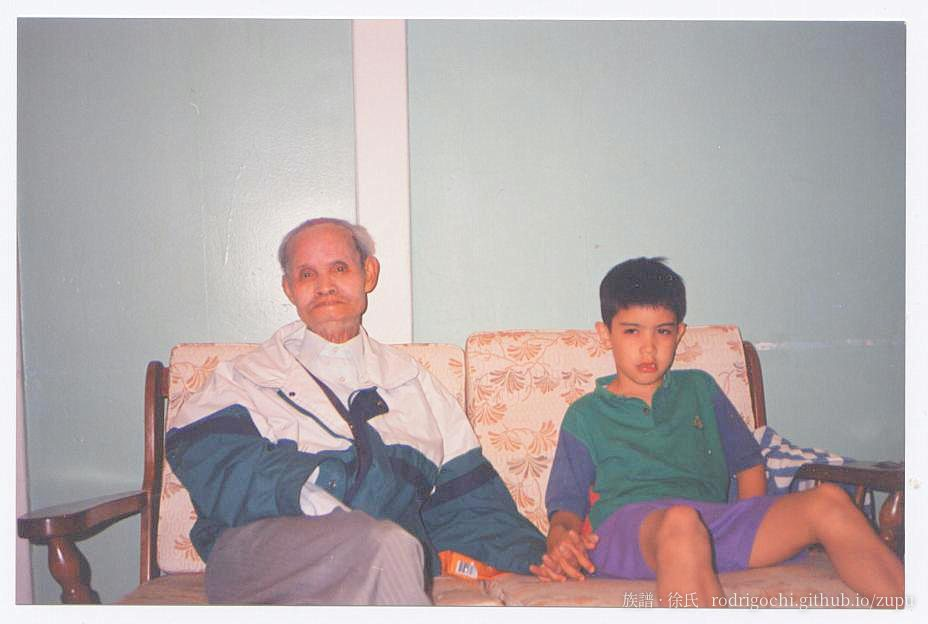
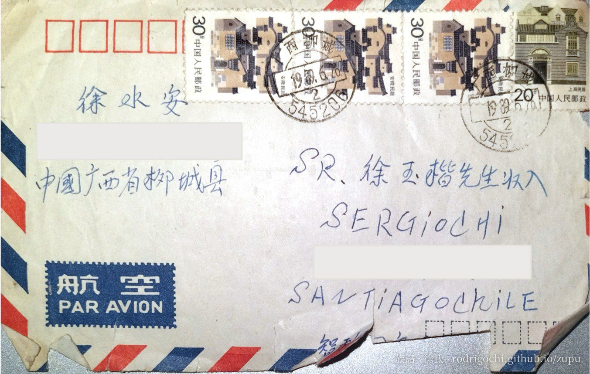
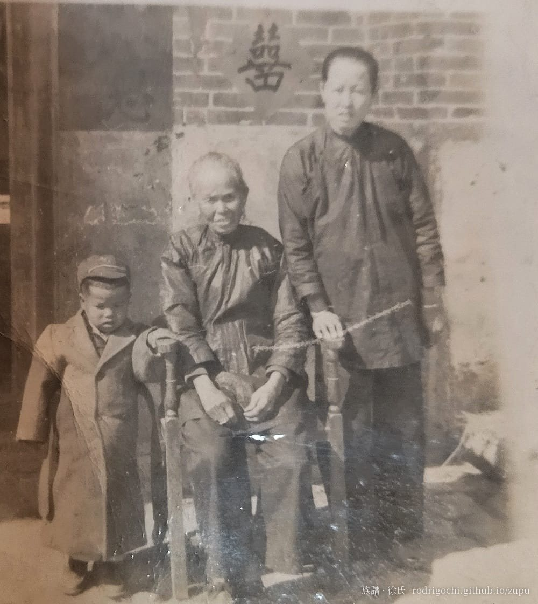
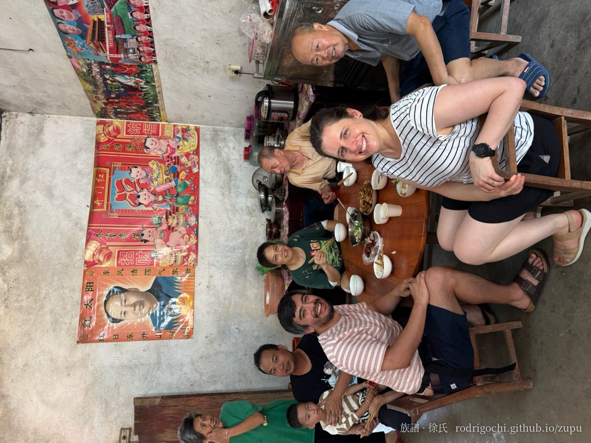
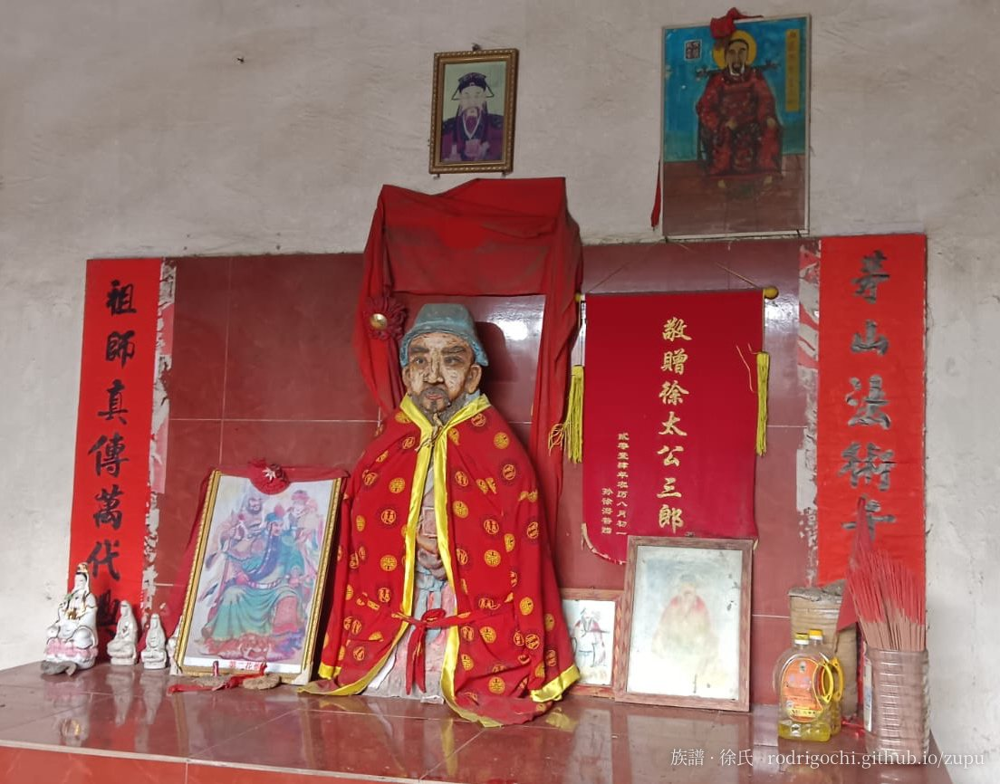
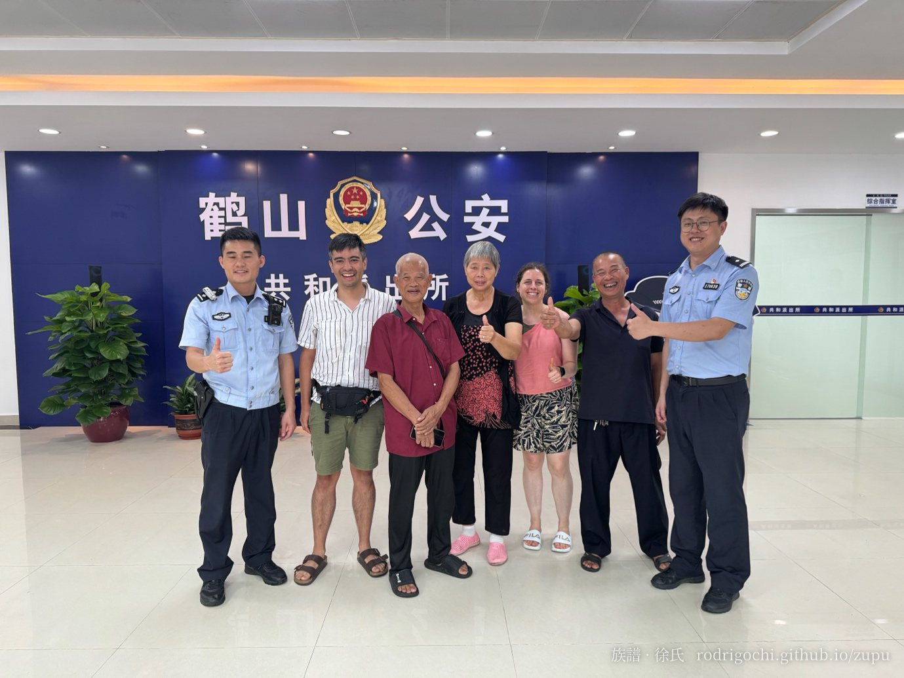
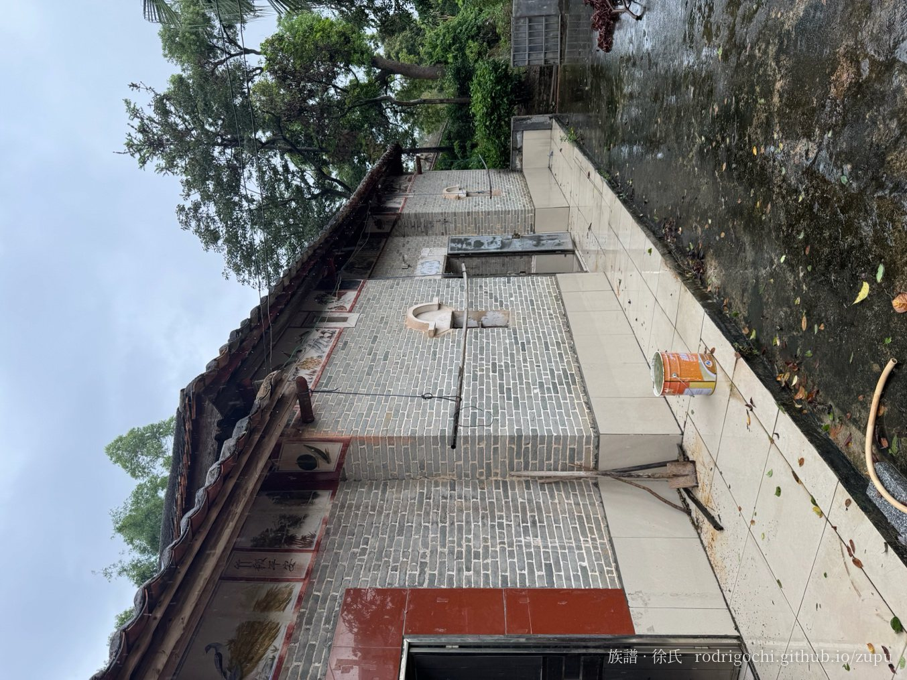
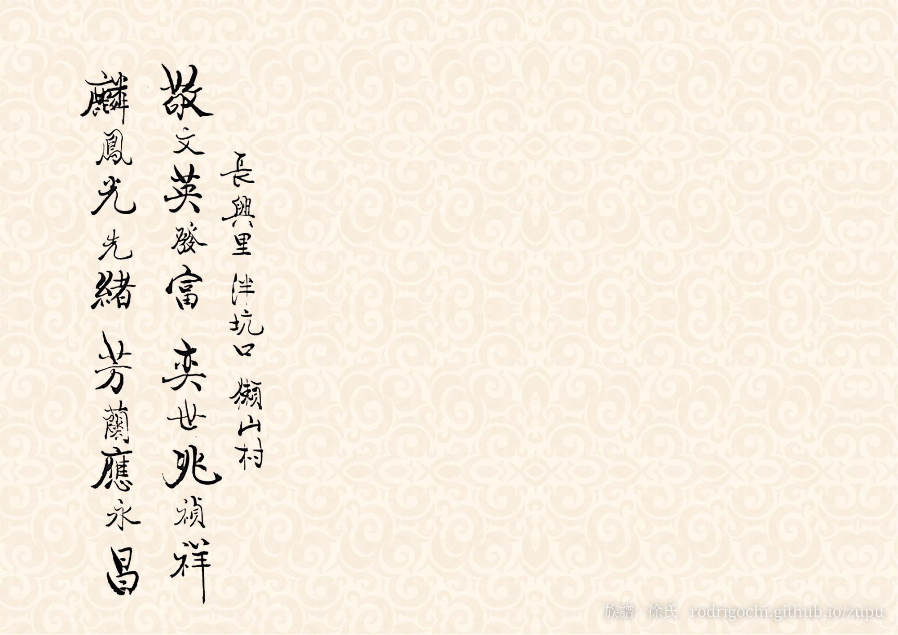

Entre los dos puntos más lejanos de la Tierra hay 20.004 kilómetros. Mi abuelo partió de Guangdong hacia Iquique en 1927 y nunca volvió. En julio de 2025 fui a buscar su aldea.
I La casa de al lado
Lo más lejos que se puede estar entre dos puntos sobre la superficie de la Tierra son 20.004 kilómetros: la mitad de un meridiano. Mi abuelo —el akún, como le decíamos— partió con 23 años desde la provincia de Guangdong hacia el puerto de Iquique en julio de 1927 y murió en Santiago de Chile setenta y un años después, a 19.000 kilómetros de donde nació. Nunca volvió.
Cuando yo nací, el akún ya tenía 85 años y vivía en la casa de al lado. En mi infancia, China no era un país en el mapa, sino algo que podía ver todos los días: el acento con que mi abuelo hablaba español, una comida con sabores poco habituales en las mesas chilenas que yo conocía, cuadros y libros llenos de caracteres que me parecían muy curiosos y cuyo significado desconocía. Una vez al año llegaba a su puerta una delegación china cargada de regalos para felicitarlo por ser uno de los inmigrantes más ancianos del país.

1El akún, Xu Yukai, y yo en unas vacaciones de verano, hacia 1997 o 1998.
Mi padre, hijo de madre chilena, fue muy cercano a él, pero nunca aprendió su idioma —o, para ser justos, no se lo enseñaron—. Mi abuelo fue siempre reservado sobre su vida en China. El motivo por el que se subió a aquel barco quedó reducido a una explicación que todos dábamos por sentada: la búsqueda de sustento en la ruta que a comienzos del siglo XX trajo a miles de chinos al norte salitrero. Murió cuando yo era un niño, antes de que tuviera la edad o la curiosidad para preguntárselo.
II Cartas para Xu Zhaozhang
Casi tres décadas después, en mayo de 2025, la ruta empezó a trazarse en sentido inverso desde Viena, donde vivo con mi esposa, Marcela, desde 2024. Nunca había estado en Asia y me intrigaba pisar ese país con el que tenía un vínculo de toda la vida, aunque con más preguntas que certezas. Justo entonces China eximió de visado a los chilenos por hasta treinta días. Armé un itinerario de tres semanas para julio: Beijing, Shanghái, Guangzhou, Hong Kong, con un desvío a Hokshan (鹤山, Heshan en mandarín), la tierra de mi abuelo. Un colega canadiense me sugirió una escala intermedia: las montañas kársticas de Guilin y Yangshuo, en la provincia de Guangxi.
Con todo reservado, llamé a mis padres a Chile.
—Papá, ¿tienes alguna idea de qué parte de Hokshan era el akún?
—No lo sé, pero creo que en un maletín hay algunas cartas guardadas que podrían darnos alguna pista.
Hasta entonces, nuestras coordenadas eran vagas. Sabíamos que el nombre chino de mi abuelo era Xu Yukai (徐玉楷) y que era hakka, un pueblo de origen han con lengua propia y una larga historia de migraciones. De esa herencia conservábamos apenas unas palabras: nuestro apellido, Chi, adaptación de la pronunciación de 徐; akún (阿公), que en hakka significa abuelo; y Hokshan, en vez de Heshan. Pero Hokshan es un municipio casi del tamaño del Gran Santiago. Ir sin saber de qué aldea venía era buscar a ciegas.
Un par de días antes del vuelo recibí los escaneos de mi padre: fotografías en blanco y negro, sobres de correo aéreo dirigidos a «Sr. Sergio Chi» (el nombre en español que mi abuelo había escogido) y cartas guardadas por más de treinta y cinco años, en caracteres que ninguno de los dos sabía leer. Se las mandé a amigos chinos de mi doctorado en Estados Unidos para que me ayudaran a descifrarlas.
Una carta de junio de 1989 nos llamó la atención. La enviaba un tal Xu Shuian (徐水安) desde Dongquan, en Guangxi: para mi asombro, a poco más de una hora de Guilin y Yangshuo, la escala que me había recomendado mi colega. El sobre iba dirigido a mi abuelo, pero la carta comenzaba con un nombre que no conocíamos: Xu Zhaozhang (徐兆璋). El remitente contaba que su padre acababa de morir y firmaba «侄徐水安敬上»: «Tu sobrino, Xu Shuian, con respeto». No reconocíamos ni al sobrino que firmaba ni el nombre del destinatario.

2El sobre de la carta que Xu Shuian envió desde Dongquan en junio de 1989.
—Jamás había escuchado esos nombres —me dijo mi padre—. ¿No serán cartas para algún paisano, o para Vladimir, el primo de tu abuelo? Porque su único sobrino acá era Kintong.
Kintong era hijo del único hermano del akún. Con su ayuda llegó a Chile en los años ochenta, vivió allá casi tres décadas y hacia 2010 regresó a China sin dejar rastro. Entre las fotos del maletín apareció un retrato que guardé de inmediato: frente a un muro de ladrillos, la madre de mi abuelo, anciana, sentada en una silla de madera; su nuera de pie, y un niño de gorra y abrigo largo. Era Kintong, a los cinco años, hacia 1950.

3La madre del akún, su nuera y Kintong, a los cinco años, hacia 1950.
III Sally
Aterrizamos en Beijing el 9 de julio. En Shanghái imprimí una carpeta con todo lo que mi padre me había enviado y, en la primera página, una breve presentación en chino, traducida con ChatGPT, que explicaba quién era yo y qué buscaba. Quería que el papel me ayudara cuando me quedara sin palabras.
Las montañas de Guangxi justificaron con creces la recomendación de mi colega. Pero en nuestra última noche en Yangshuo, el entusiasmo por la carta se había vuelto duda. Algunos amigos chinos me habían advertido que en la China rural un desconocido que aparece con papeles viejos puede despertar recelo: podrían pensar que viene a reclamar tierras o una herencia olvidada. Y estaba el idioma. Casi nadie hablaba inglés, y explicar en una comisaría rural un enredo genealógico de tres generaciones con el traductor del teléfono parecía una misión condenada al fracaso.
Esa noche pedimos un DiDi para volver al hotel. Al abrir la puerta, una conductora joven se giró hacia nosotros con una sonrisa.
—Huì shuō Zhōngwén ma?
—Sorry? Do you speak Chinese? (¿Perdón? ¿Hablan chino?) —se corrigió al ver nuestras caras.
—No, we don’t (No, no hablamos).
—Oh, I speak English! (¡Ah, yo hablo inglés!).
Se llamaba Sally. Había hecho un posgrado en inglés y, cansada de la vida frenética de las grandes metrópolis, se había vuelto a vivir cerca de su familia para escalar en roca y grabar vlogs de su día a día. Apuntó la cámara del teléfono hacia el asiento trasero y nos pidió saludar: éramos los primeros extranjeros que llevaba.
Cuando íbamos llegando al hotel, le mostré la foto del akún y los sobres, y le conté lo que buscaba. Me animé:
—Do you have time tomorrow? Can you drive us there and help us? (¿Tienes tiempo mañana? ¿Puedes llevarnos y ayudarnos?).
Aceptó sin dudarlo. Le ofrecí pagarle el viaje y el día de trabajo; su única condición fue grabar la aventura para su canal de Bilibili, una de las plataformas de video más populares de China.
IV Dongquan
A la mañana siguiente, tras poco más de una hora hacia el interior, entramos a Dongquan. La dirección del sobre ya no existía, así que fuimos directo a la comisaría. Desplegué la carpeta sobre el mesón mientras Sally le explicaba nuestra historia al oficial de turno. El policía tecleó el nombre de Xu Shuian en su computador.
No habían pasado diez minutos cuando levantó la vista y le dijo algo a Sally.
—¡Dice que lo encontró y que ahora mismo lo va a llamar!
Me llevé las manos a la cara. Le pedí a Sally que le dijera que yo era el nieto de Xu Yukai. Hasta hoy no sé qué se dijo en esa llamada, pero al colgar el oficial nos anunció que íbamos a verlo. Los propios policías subieron a su patrulla y nos hicieron señas para que los siguiéramos.
Llegamos a una casa humilde. En la sala, rodeado de fotos familiares y retratos de Mao, nos esperaba sentado un señor de unos setenta años junto a su esposa: Xu Shuian. A nuestro alrededor, los policías grababan el encuentro con sus teléfonos. Intenté mostrarle las cartas, pero unos meses antes había sufrido un accidente cerebrovascular y sus recuerdos eran confusos; no lograba precisar ni de dónde venía su familia. Su esposa, en cambio, recordaba haber oído a su suegro decir que tenían parientes en Chile.

4Marcela y yo sentados a la mesa con Xu Shuian (a la derecha) y su familia en Dongquan, julio de 2025.
Al rato llegó otro anciano del mismo clan, que vivía cerca. Nos contó que su rama se había trasladado desde Guangdong décadas atrás y que, si queríamos dar con la tierra de mi abuelo, teníamos que ir a la aldea de Pankeng (泮坑), en el pueblo de Gonghe (共和).
Sin tener claro el parentesco exacto, la familia nos sentó a su mesa con un cariño enorme, nos llevó al festival del lichi y terminamos cosechando fruta de sus árboles. Nos regalaron tantos lichis que antes de irnos pasamos por la comisaría a dejarles una bolsa a los policías. Sally nos dejó en la estación y seguimos hacia Guangdong.
V Gonghe bajo la lluvia
Después de unos días en Guangzhou, llegamos de noche a un hotel cerca de Gonghe que, a todas luces, no recibía turistas: los niños les tiraban de la manga a sus padres para señalarnos. Buscando pistas en Baidu Maps encontré el salón de veneración de Xu Sanlang (徐三郎公祠) en la zona de Pankeng. Me pareció un buen punto de partida.
A la mañana siguiente compramos ofrendas en un mercado y pedimos un DiDi bajo una lluvia torrencial. Habíamos caminado veinte metros hacia el salón cuando me llevé la mano al bolsillo y sentí un vacío helado: el teléfono se había quedado en el auto. En la China actual todo pasa por el celular —comunicarse, pagar una botella de agua, pedir transporte—, y el de Marcela no tenía internet. Alcanzamos a ver una estatua y unos recuadros taoístas que no supe descifrar, pero con la angustia encima no tenía sentido seguir buscando ancestros. Estábamos incomunicados.

5Altar de veneración a Xu Sanlang, en Gonghe.
Dejamos nuestras ofrendas y echamos a caminar hacia el hotel, a unos diez kilómetros, por la orilla de un camino rural y bajo la lluvia. A los diez minutos se detuvo un auto. El conductor, intrigado por esos dos extranjeros empapados, me pasó su teléfono para que le escribiera, pero el teclado estaba en chino. Abrí su WeChat, grabé un mensaje de voz en inglés pidiéndole que nos llevara al hotel o a la policía y usé la traducción automática. No sé qué entendió, pero nos hizo un gesto para que subiéramos.
Avanzamos en silencio por caminos desconocidos. Lo confieso: con Marcela alcanzamos a imaginar lo peor, con todos los prejuicios que uno trae en la mente. Cinco minutos después, el auto dobló hacia el patio de la comisaría de Gonghe.
Adentro, comunicarse era casi imposible, y la carpeta volvió a hablar por mí. Llevábamos media hora intentando explicar lo del teléfono cuando un policía veterano revisó los sobres y nos hizo un gesto inequívoco: conocía a una de las personas de esos papeles y la iba a llamar.
VI ¡Familia!
Quince minutos más tarde, la puerta se abrió de golpe y entró un hombre gritando en español:
—¡FAMILIA! ¡FAMILIA!
Me quedé helado. Era demasiado joven para ser Kintong y hablaba un español chapurreado. Entre frases cortadas entendí que era Tzunkien, su hermano menor, otro primo de mi padre. Para ser sincero, mi cabeza seguía en el teléfono y no lograba sintonizar con su euforia; noté en él cierta molestia ante mi frialdad. Los policías nos llevaron en patrulla al hotel, donde, conectado al wifi, hice sonar mi teléfono por WhatsApp desde el de Marcela. Le pasé el teléfono a un policía, que habló con la conductora del DiDi y acordó con ella que lo dejaría en la comisaría.
Al volver nos esperaba la prensa: los propios policías habían llamado a dos periodistas locales para cubrir la historia del chileno que había cruzado el mundo buscando sus raíces. Y allí estaba también Kintong, con su pareja. Quince años después de irse de Chile sin despedirse, el primo de mi padre estaba frente a mí.
Abrí la carpeta en la página del retrato: el muro de ladrillos, su abuela en la silla de madera, su madre de pie, él con gorra y abrigo largo. Kintong no recordaba esa foto. Se quedó mirándola y se emocionó. Los periodistas preguntaban, los policías grababan, y al rato llegó la conductora a devolverme mi teléfono.

6Con Kintong (al centro, de camisa burdeo), su pareja y Tzunkien (a la derecha, de negro) en la comisaría de Gonghe.
VII Treinta generaciones
Antes de cenar, Kintong y Tzunkien nos llevaron a Pankeng, la aldea donde nació el akún.
Nos mostraron la casa donde vivió mi abuelo: tres o cuatro habitaciones sobre una colina, con murales pintados en la entrada que ya acusaban el paso del tiempo. Estaba vacía y algo maltrecha. Recorrí esos cuartos tratando de imaginar al akún joven, antes del barco y de Iquique.

7La casa del akún en Pankeng.
En la cena se fueron atando los cabos. Supe que mi abuelo no había llevado a Chile a un sobrino, sino a dos: Tzunkien también vivió allá un par de años, pero no se acostumbró y volvió. De ahí su español y sus gritos de «¡familia!». Después me mostró en su teléfono el árbol familiar, y llegó la revelación: Xu Zhaozhang era mi abuelo. Era su nombre de nacimiento, el que lo marcaba en su generación y con el que lo llamaba su familia; Xu Yukai fue el nombre que eligió después, en Chile. Xu Shuian le había escrito a él. Un par de días más tarde, Tzunkien habló con los parientes de Guangxi y cerró el misterio: el padre de Xu Shuian era primo del akún.
Tzunkien guarda además un PDF del zupu, el libro genealógico de la familia. Ahí están treinta generaciones por línea paterna, hasta un antepasado que vivió durante la dinastía Song, hacia el año 1100. El libro dibuja una ruta de casi novecientos años: la migración hakka desde las montañas de Jiangxi hacia Fujian, luego Meizhou, en Guangdong, y desde allí a Hokshan. Los Xu que bajaron de Meizhou trajeron consigo el culto a Xu Sanlang, un maestro taoísta de la familia. Era el mismo en cuyo salón yo había dejado ofrendas esa mañana, antes de perder el teléfono y, horas después, encontrar a la familia.

8El poema generacional del zupu de los Xu de Pankeng. Se lee de derecha a izquierda y asigna un carácter a cada generación. Sus dos primeros versos dicen «敬文英發富，奕世兆禎祥»: «Honrar las letras para que el talento prospere; generación tras generación, presagios de buena fortuna». A mi abuelo le correspondió 兆 (zhào), «presagio». Después de él, los nombres generacionales cayeron en desuso en la familia: a mi padre le habría correspondido 禎 (zhēn), «dicha», y a mí, 祥 (xiáng), «buen augurio».
El viaje del akún en 1927 repetía un patrón de más de novecientos años: el de mis antepasados migrando. Quizás nuestra vida en Europa también sea parte de él.
VIIIWelcome back home
La comisaría subió un video nuestro a sus redes, los periodistas publicaron una nota en el diario local y Sally hizo una serie de videos que sumaron más de un millón de visitas. Después vino un reportaje de quince minutos en la televisión de Guangxi. Mi abuelo, que nunca quiso contar su vida en China, terminó en una historia que probablemente vieron millones de personas en ese país.
Hoy las dos ramas de la familia, que habían perdido el contacto hace décadas, conversan en un grupo de WeChat y se reúnen para las festividades chinas. Las unieron unas cartas amarillentas que pasaron más de treinta y cinco años en un maletín, a 19.000 kilómetros de donde fueron escritas, y la curiosidad de un nieto que por fin quiso leerlas.
Soy un hombre de ciencia y desconfío de lo sobrenatural. Por separado, cada uno de estos hechos podría ser una coincidencia: unas cartas que nadie tiró en décadas, la recomendación de un colega durante un almuerzo, una conductora de DiDi que hablaba inglés y estaba dispuesta a ayudarnos, Xu Shuian vivo treinta y seis años después de su carta, un teléfono olvidado en un taxi la misma mañana en que llevaba ofrendas a Xu Sanlang. Pero al mirar la secuencia completa, pienso en una expresión que en China se usa justamente para esto: 祖先保佑 (zǔxiān bǎoyòu), la protección de los antepasados. ¿Y si fueron ellos quienes guiaron el camino? Vuelvo a esa pregunta cada vez que recuerdo al oficial de Gonghe que, antes de despedirnos, me estrechó la mano y me dijo, en un inglés que imaginé ensayado especialmente para mí:
—Welcome back home.
El akún nunca volvió. Esa tarde, de algún modo, volvió conmigo.
I The house next door
The farthest two points on the surface of the Earth can be from each other is 20,004 kilometres: half a meridian. My grandfather —the akún, as we called him— left the province of Guangdong for the port of Iquique in July 1927, aged 23, and died in Santiago de Chile seventy-one years later, 19,000 kilometres from where he was born. He never went back.
When I was born, the akún was already 85 and lived in the house next door. In my childhood, China was not a country on the map but something I could see every day: the accent in my grandfather's Spanish, food with flavours rarely found on the Chilean tables I knew, pictures and books full of characters that fascinated me and whose meaning I did not know. Once a year a Chinese delegation arrived at his door laden with gifts, to congratulate him on being one of the oldest immigrants in the country.
1The akún, Xu Yukai, and me on a summer holiday, around 1997 or 1998.
My father, whose mother was Chilean, was very close to him, but never learned his language —or, to be fair, was never taught it. My grandfather was always reserved about his life in China. Why he boarded that ship came down to an explanation we all took for granted: the search for a living along the route that, in the early twentieth century, brought thousands of Chinese to the nitrate fields of northern Chile. He died when I was a child, before I was old enough, or curious enough, to ask him.
II Letters for Xu Zhaozhang
Almost three decades later, in May 2025, the route began to trace itself in reverse from Vienna, where I have lived with my wife, Marcela, since 2024. I had never been to Asia, and I was intrigued to set foot in the country I had been tied to all my life, though with more questions than certainties. Just then China waived visas for Chileans for stays of up to thirty days. I planned a three-week itinerary for July: Beijing, Shanghai, Guangzhou, Hong Kong, with a detour to Hokshan (鹤山, Heshan in Mandarin), my grandfather's homeland. A Canadian colleague suggested a stop on the way: the karst mountains of Guilin and Yangshuo, in Guangxi province.
With everything booked, I called my parents in Chile.
—Dad, do you have any idea which part of Hokshan the akún came from?
—I don't know, but I think there are some letters kept in a briefcase that might give us a clue.
Until then, our coordinates were vague. We knew that my grandfather's Chinese name was Xu Yukai (徐玉楷) and that he was Hakka, a Han people with a language of their own and a long history of migration. Of that heritage we kept only a few words: our surname, Chi, an adaptation of the pronunciation of 徐; akún (阿公), which means grandfather in Hakka; and Hokshan, instead of Heshan. But Hokshan is a municipality almost the size of Greater Santiago. Going without knowing which village he came from was searching blind.
A couple of days before the flight I received my father's scans: black-and-white photographs, airmail envelopes addressed to "Sr. Sergio Chi" (the Spanish name my grandfather had chosen) and letters kept for more than thirty-five years, in characters neither of us could read. I sent them to Chinese friends from my PhD in the United States to help me decipher them.
One letter, from June 1989, caught our attention. It was sent by a certain Xu Shuian (徐水安) from Dongquan, in Guangxi: to my astonishment, little more than an hour from Guilin and Yangshuo, the stop my colleague had recommended. The envelope was addressed to my grandfather, but the letter began with a name we did not know: Xu Zhaozhang (徐兆璋). The sender wrote that his father had just died, and signed «侄徐水安敬上»: "Your nephew, Xu Shuian, respectfully". We recognised neither the nephew who signed it nor the name of the person it was addressed to.
2The envelope of the letter Xu Shuian sent from Dongquan in June 1989.
—I had never heard those names —my father told me—. Couldn't they be letters for some fellow countryman, or for Vladimir, your grandfather's cousin? Because his only nephew here was Kintong.
Kintong was the son of the akún's only brother. With his help he came to Chile in the eighties, lived there for almost three decades and, around 2010, went back to China without a trace. Among the photos in the briefcase there was a portrait I kept at once: in front of a brick wall, my grandfather's mother, elderly, sitting on a wooden chair; her daughter-in-law standing, and a boy in a cap and a long coat. It was Kintong, aged five, around 1950.
3The akún's mother, her daughter-in-law and Kintong, aged five, around 1950.
III Sally
We landed in Beijing on 9 July. In Shanghai I printed a folder with everything my father had sent me and, on the first page, a short introduction in Chinese, translated with ChatGPT, explaining who I was and what I was looking for. I wanted the paper to help me when I ran out of words.
The mountains of Guangxi more than justified my colleague's recommendation. But by our last night in Yangshuo, our excitement about the letter had turned to doubt. Some Chinese friends had warned me that in rural China a stranger turning up with old papers can arouse suspicion: people might think he has come to claim land or a forgotten inheritance. And there was the language. Almost no one spoke English, and explaining a three-generation genealogical tangle at a rural police station with a phone translator seemed a mission doomed to fail.
That night we ordered a DiDi back to the hotel. When we opened the door, a young driver turned to us with a smile.
—Huì shuō Zhōngwén ma?
—Sorry? Do you speak Chinese? —she corrected herself, seeing our faces.
—No, we don't.
—Oh, I speak English!
Her name was Sally. She had a postgraduate degree in English and, tired of the frantic life of the big cities, had moved back near her family to go rock climbing and film vlogs of her daily life. She pointed her phone camera at the back seat and asked us to say hello: we were the first foreigners she had driven.
As we neared the hotel, I showed her the photo of the akún and the envelopes, and told her what I was looking for. I took the plunge:
—Do you have time tomorrow? Can you drive us there and help us?
She agreed without hesitation. I offered to pay for the trip and her day's work; her only condition was to film the adventure for her Bilibili channel, one of the most popular video platforms in China.
IV Dongquan
The next morning, after a little over an hour inland, we drove into Dongquan. The address on the envelope no longer existed, so we went straight to the police station. I spread the folder out on the counter while Sally explained our story to the officer on duty. The policeman typed Xu Shuian's name into his computer.
Less than ten minutes had passed when he looked up and said something to Sally.
—He says he found him and he's going to call him right now!
I put my hands over my face. I asked Sally to tell him I was Xu Yukai's grandson. To this day I don't know what was said on that call, but when he hung up the officer announced that we were going to see him. The policemen themselves got into their patrol car and waved for us to follow.
We arrived at a modest house. In the living room, surrounded by family photos and portraits of Mao, a man of about seventy sat waiting for us beside his wife: Xu Shuian. Around us, the policemen filmed the meeting on their phones. I tried to show him the letters, but a few months earlier he had suffered a stroke and his memories were confused; he could not even say where his family came from. His wife, on the other hand, remembered hearing her father-in-law say they had relatives in Chile.
4Marcela and I at the table with Xu Shuian (right) and his family in Dongquan, July 2025.
After a while another elder of the same clan, who lived nearby, arrived. He told us that his branch had moved from Guangdong decades earlier and that, if we wanted to find my grandfather's land, we had to go to the village of Pankeng (泮坑), in the town of Gonghe (共和).
Without knowing the exact kinship, the family sat us at their table with enormous warmth, took us to the lychee festival, and we ended up picking fruit from their trees. They gave us so many lychees that before leaving we stopped by the police station to leave a bag for the officers. Sally dropped us at the station and we carried on to Guangdong.
V Gonghe in the rain
After a few days in Guangzhou, we arrived at night at a hotel near Gonghe that, by all appearances, did not get tourists: children tugged at their parents' sleeves to point at us. Looking for clues on Baidu Maps, I found the ancestral hall of Xu Sanlang (徐三郎公祠) in the Pankeng area. It seemed a good place to start.
The next morning we bought offerings at a market and ordered a DiDi in torrential rain. We had walked twenty metres towards the hall when I reached into my pocket and felt an icy emptiness: I had left my phone in the car. In today's China everything goes through your phone —talking to people, paying for a bottle of water, getting a ride— and Marcela's had no internet. We managed to see a statue and some Taoist panels I could not decipher, but with that anxiety weighing on us there was no point in going on looking for ancestors. We were cut off.
5The altar to Xu Sanlang, in Gonghe.
We left our offerings and set off on foot towards the hotel, about ten kilometres away, along the edge of a country road in the rain. Ten minutes later a car pulled over. The driver, intrigued by these two drenched foreigners, handed me his phone so I could type to him, but the keyboard was in Chinese. I opened his WeChat, recorded a voice message in English asking him to take us to the hotel or to the police, and used the automatic translation. I don't know what he understood, but he gestured for us to get in.
We drove in silence along unfamiliar roads. I confess that Marcela and I began to imagine the worst, with all the prejudices one carries in one's head. Five minutes later, the car turned into the yard of the Gonghe police station.
Inside, communicating was almost impossible, and once again the folder spoke for me. We had spent half an hour trying to explain about the phone when a veteran officer looked through the envelopes and made an unmistakable gesture: he knew one of the people in those papers and was going to call him.
VI ¡Familia!
Fifteen minutes later, the door burst open and a man came in shouting in Spanish:
—¡FAMILIA! ¡FAMILIA!
I froze. He was too young to be Kintong and spoke broken Spanish. Between halting phrases I understood that he was Tzunkien, his younger brother, another of my father's cousins. To be honest, my mind was still on the phone and I could not tune in to his euphoria; I sensed a certain annoyance in him at my coldness. The police drove us in a patrol car to the hotel where, on the wifi, I rang my phone over WhatsApp from Marcela's. I handed the phone to a policeman, who spoke to the DiDi driver and arranged for her to leave it at the police station.
When we got back, the press was waiting: the police themselves had called two local journalists to cover the story of the Chilean who had crossed the world in search of his roots. And there too was Kintong, with his partner. Fifteen years after leaving Chile without saying goodbye, my father's cousin stood in front of me.
I opened the folder at the page with the portrait: the brick wall, his grandmother on the wooden chair, his mother standing, him in a cap and a long coat. Kintong did not remember that photo. He kept looking at it and was moved. The journalists asked questions, the policemen filmed, and after a while the driver arrived to return my phone.
6With Kintong (centre, in a burgundy shirt), his partner and Tzunkien (right, in black) at the Gonghe police station.
VII Thirty generations
Before dinner, Kintong and Tzunkien took us to Pankeng, the village where the akún was born.
They showed us the house where my grandfather lived: three or four rooms on a hill, with murals painted at the entrance that already showed the passing of time. It was empty and somewhat run-down. I walked through those rooms trying to imagine the akún as a young man, before the ship and Iquique.
7The akún's house in Pankeng.
Over dinner the threads came together. I learned that my grandfather had brought not one nephew to Chile, but two: Tzunkien had also lived there for a couple of years, but did not settle and went back. Hence his Spanish and his shouts of "¡familia!". Then he showed me the family tree on his phone, and the revelation came: Xu Zhaozhang was my grandfather. It was his birth name, the one that marked him within his generation and that his family called him by; Xu Yukai was the name he chose later, in Chile. Xu Shuian had written to him. A couple of days later, Tzunkien spoke with the relatives in Guangxi and solved the mystery: Xu Shuian's father was the akún's cousin.
Tzunkien also keeps a PDF of the zupu, the family's genealogical book. In it are thirty generations in the paternal line, back to an ancestor who lived under the Song dynasty, around the year 1100. The book traces a route of almost nine hundred years: the Hakka migration from the mountains of Jiangxi to Fujian, then Meizhou, in Guangdong, and from there to Hokshan. The Xu who came down from Meizhou brought with them the cult of Xu Sanlang, a Taoist master of the family. He was the same one in whose hall I had left offerings that morning, before losing my phone and, hours later, finding the family.
8The generation poem of the zupu of the Xu of Pankeng. It reads from right to left and assigns one character to each generation. Its first two lines say «敬文英發富，奕世兆禎祥»: "Honour letters so that talent may flourish; generation after generation, omens of good fortune". My grandfather was given 兆 (zhào), "omen". After him, generation names fell out of use in the family: my father would have been given 禎 (zhēn), "blessing", and I, 祥 (xiáng), "good augury".
The akún's journey in 1927 repeated a pattern more than nine hundred years old: that of my ancestors migrating. Perhaps our life in Europe is part of it too.
VIIIWelcome back home
The police station posted a video of us on its social media, the journalists published a piece in the local paper, and Sally made a series of videos that added up to more than a million views. Then came a fifteen-minute report on Guangxi television. My grandfather, who never wanted to talk about his life in China, ended up in a story that millions of people in that country probably saw.
Today the two branches of the family, which had lost touch decades ago, talk in a WeChat group and get together for the Chinese holidays. They were brought together by some yellowed letters that spent more than thirty-five years in a briefcase, 19,000 kilometres from where they were written, and by the curiosity of a grandson who finally wanted to read them.
I am a man of science and I am wary of the supernatural. Taken one by one, each of these events could be a coincidence: some letters nobody threw away for decades, a colleague's recommendation over lunch, a DiDi driver who spoke English and was willing to help us, Xu Shuian alive thirty-six years after his letter, a phone forgotten in a taxi on the same morning I was taking offerings to Xu Sanlang. But looking at the whole sequence, I think of an expression used in China for exactly this: 祖先保佑 (zǔxiān bǎoyòu), the protection of the ancestors. What if it was they who guided the way? I come back to that question every time I remember the officer in Gonghe who, before we said goodbye, shook my hand and told me, in an English I imagined he had rehearsed especially for me:
—Welcome back home.
The akún never went back. That afternoon, in some way, he came back with me.